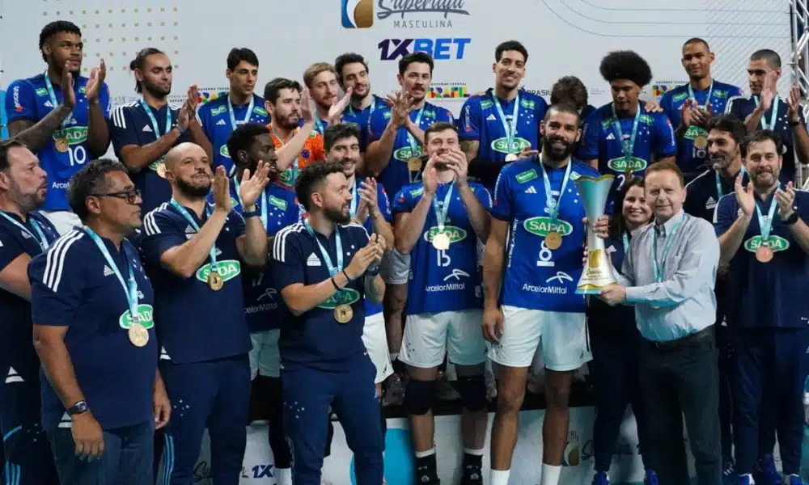

O Festival de Esportes será um evento incrível, com diversos jogos profissionais, como vôlei, futebol e tênis de mesa. Além de assistir às partidas, o público também poderá participar de atividades esportivas em espaços reservados especialmente para isso.
Principais times/esportes do festival
Sada Cruzeiro é um dos times de vôlei mais importantes do Brasil, conhecido por suas grandes conquistas e jogos emocionantes. Não perca a chance de acompanhar esse grande time no Festival de Esportes. Garanta já o seu ingresso!
